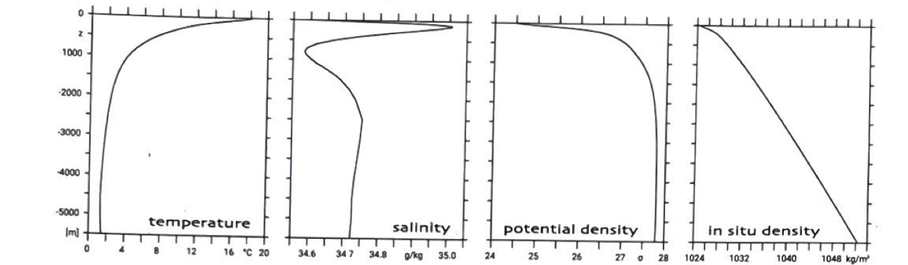
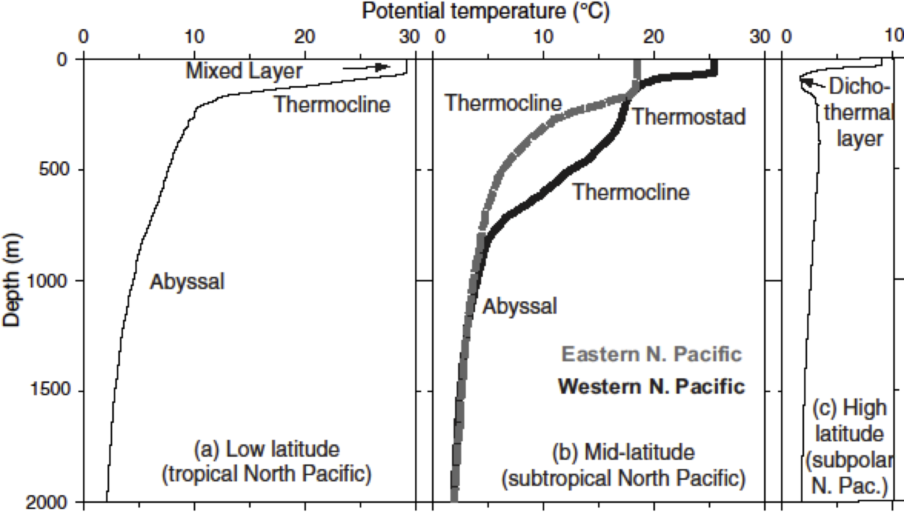
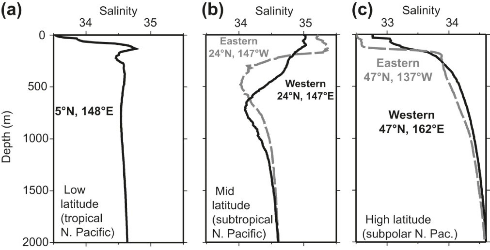
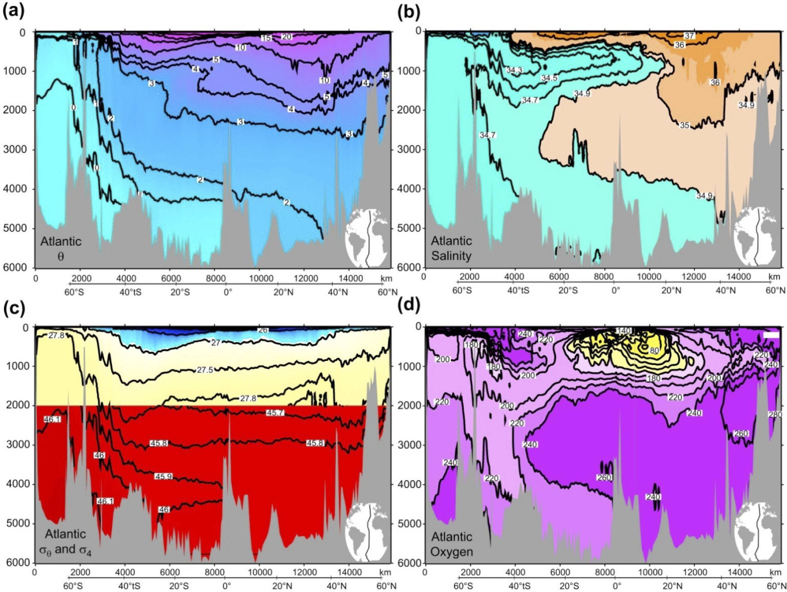
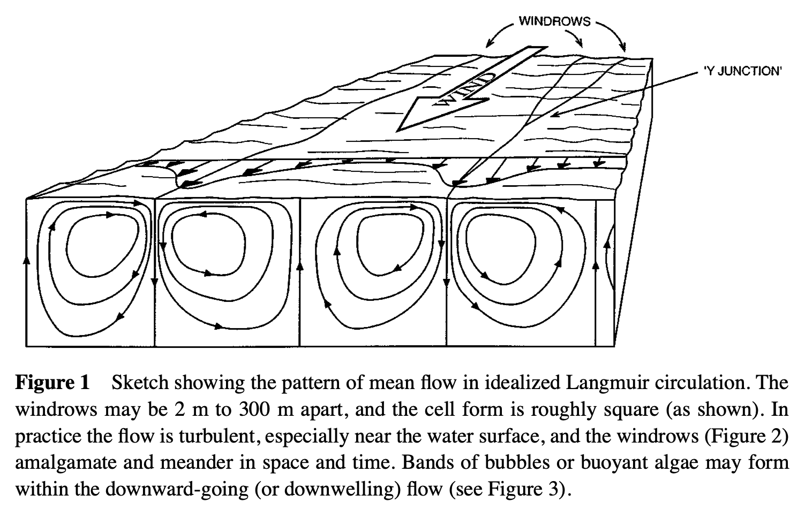
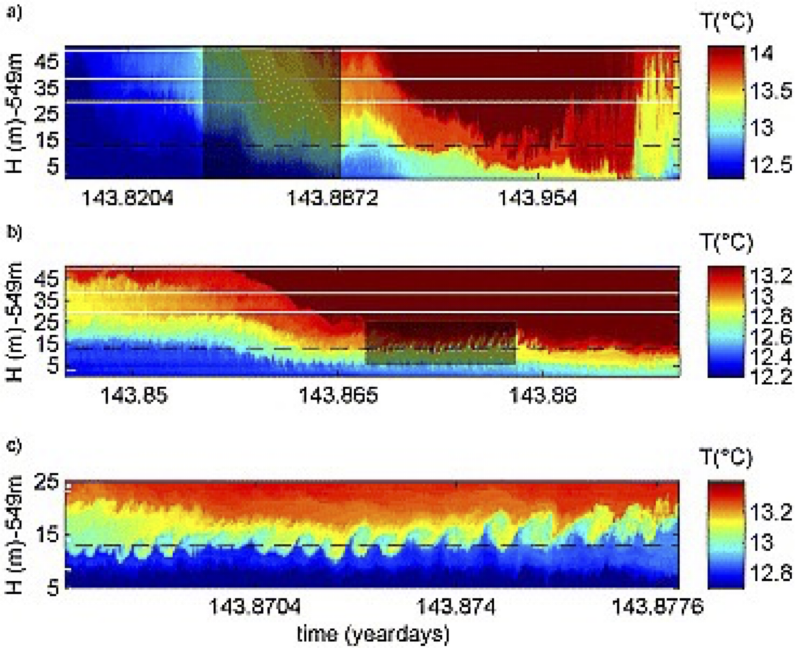

Vertical structure of the ocean#
Thermal, haline and density profiles (in week 2)#
Globally-averaged profiles provide a first general idea into the ocean’s stratification. The vertical structure of the ocean is characterized by downward decreasing temperature, increasing density and varying salinity: 
Pointwise observations confirm this picture, with some exceptions: a vertically homogeneous layer at the surface, and unusual profiles in high latitudes.
 Figure: Typical potential temperature (°C)/depth (m) profiles for the open ocean in (a) the tropical western North Pacific (5°N), (b) the western and eastern subtropical North Pacific (24°N), and (c) the western subpolar North Pacific (47°N). Corresponding salinity profiles are shown in Figure 4.16.
 Figure from DPO 4.16: Typical salinity (psu) profiles for the tropical, subtropical, and subpolar regions of the North Pacific. Corresponding temperature profiles are shown in Figure 4.2.
Meridional sections through the Atlantic Ocean reveal the large-scale pattern of layers of different T-S characteristics.  Figure from DPO 4.11: (a) Potential temperature (°C), (b) salinity (psu), (c) potential density sq (top) and potential density s4 (bottom) (kg m–3), and (d) oxygen (mmol/kg) in the Atlantic Ocean at longitude 20° to 25°W. Data from the World Ocean Circulation Experiment. This figure can also be found in the color insert.
Surface mixed layer (week 4)#
Air-sea interaction#
The ocean is driven by atmospheric conditions (momentum, heat and freshwater fluxes), and the exchange occurs on a molecular level, directly affecting only a very thin (mm thick) surface layer.
Due to vertical mixing, a quasi-homogeneous layer of a few tens of meters thickness forms that is in direct contact with the atmosphere. The depth of this surface mixed layer (SML) is set by the strength of various mixing processes, in combination with surface heating and freshwater fluxes.
Vertical mixing#
Turbulent diffusion#
Consider vertical temperature diffusion
with a temporally-varying (periodic) surface boundary condition
and
as the lower boundary condition. The analytical solution for \(T=T_0\exp(i\omega t+mz)\) is
where the penetration depth is
For a typical turbulent mixing coefficient (\(A_v=10^{-4}\) m\(^{2}\)s\(^{-1}\)), this leads to
Note that in general, \(\frac{D_{annual}}{D_{diurnal}} = 19.1\ .\)
The solution of the diffusion equation for seasonal forcing may look like this:
Convection#
Static instability (i.e., when \(N^2<0\)) is removed by convective mixing almost instantaneously (i.e., you will not often see static instability in measurements of CTD data). The associated vigorous vertical velocities lead to high levels of turbulence and the end product is a quasi-homogeneous fluid. Hence convection is often seen as an essentially diffusive process with a very large mixing coefficient \(A_v=1\) m\(^2\)s\(^{-1}\). Taking convection into account, the seasonal cycle becomes asymmetric and dominated by deep penetration in winter.
In three dimensions, convection takes place in locally-confined areas (often only 100 m wide), so-called chimneys.
Langmuir circulation cells#
Another mechanism to vertically mix the surface layer are Langmuir circulation cells, counterrotating rolls of water motion in the upper few meters of the ocean (top 50 m or so), caused by wind. Their presence can be inferred from streaks of floating material or bubbles on the water surface.

Inertial oscillations#
Strong winds have another direct effect: the passage of a storm or hurricane will excite inertial oscillations that effectively mix the upper water column:
Current shear instability#
Another source of energy for mixing is the vertical shear of horizontal currents (\(u_0(z)\)). In a stratified ocean, an instability may develop
and leads to mixing (through the breaking of waves):
This so-called Kelvin-Helmholtz instability can be nicely observed in the atmosphere, or using inductively linked thermistors at high resolution on a mooring as in van Haren and Gostiaux 2010. 
Upper ocean profiles#
In summary, turbulent and convective mixing often lead to a distinct surface layer, the surface mixed layer, often with a sharp gradient zone at its base, the thermocline (pycnocline). In some cases, thermo-, halo- and pycnocline coincide, but the determination of the mixed layer depth (MLD) can also be more difficult.
Hence there are several definitions for the depth of the surface mixed layer (SML).
MLD (mixed layer depth): depth where the absolute difference between temperature (potential density) and SST (SS\(_{\sigma_T}\)) has a certain value; (in case where salinity is important) depth where the density is greater than the suerface density by an amoutn equivalent to a certain temperature change.
ILD (isothermal layer depth): depth at which the temperature has changed by an absolute temperature difference of 0.8 degrees C from the temperature 10 m below the surface.
MgLD (mixing layer depth): surface layer that has been continuously turbulent during the previous 24 hours (the turbocline is the depth where the turbulence drops significantly).
The global distribution of MLD depends on season.